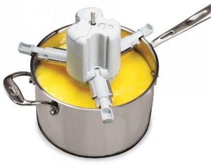
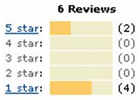

|
Arif Özver Ergin
B.Sc. Makine Müh.
M.Sc. Endüstriyel Tasarým
Aralýk 2008, Ýstanbul
Çorba karýþtýrýrken yaþadýðýnýz sorunlar çerçevesinde bir yemek karýþtýrýcý icat ettiniz. Bir þekilde baþkalarý konudan haberdar oldu, yurt dýþýnda ürünü üretti ve pazara sundu. Bu, hikayenin birinci bölümüydü.
Yani, icat ve giriþimcilik süreçleri ayrý ayrý yürüdü. Ýcadýn sahibi ama giriþimcilik risklerini almamýþ birisi olarak naif bir þekilde þöyle düþünebilirsiniz: "Gayet güzel. Yurt içindeki patent bana ait. Türkiye'de pazara çýktýðý zaman payýmý alýrým".
Ýþte bu noktada icat ile inovasyonun ayrýmý ortaya çýkýyor ki bu süreç hem mucit hem de giriþimci için önemli dersler içeriyor. Bu da hikayenin ikinci bölümü:
Teorik altyapý:
Ýcat, inovasyon ve ticarileþme konusunu çalýþmalarýnýn merkezine koyan ilk bilim adamý Schumpeter'dir. Schumpeter icat ve inovasyonun farklý þeyler olduðunun altýný çizmiþtir. Ona göre icat, giriþimci bir çaba ile inovasyona yani yeniliðe dönüþmediði sürece baþarýlý olmuþ sayýlmaz. Schumpeter aslýnda yenilik konusundaki çalýþmalarýný, yeniliðin ekonomik geliþmeye ve pazar dinamiklerine olan etkisini göstermek için yapmýþtýr. 1883 ve 1950 yýllarý arasýnda yaþamýþ olan Scumpeter'in çalýþmalarý, bugün halâ inovasyon alanýndaki çalýþmalarýn referanslarýndan birisidir.
Ýcat ve inovasyon konusunda Schumpeter'in bulgularýný inceleyen en güncel ve ilgi çekici çalýþma Pontus Braunerhjelm ve Roger Svensson'a aittir. Bu araþtýrmacýlar Ýsveç'te baþarýlý ve baþarýsýz icatlarý incelemiþ ve önemli sonuçlara ulaþmýþlardýr:
- Mucidin ticarileþtirmeden sorumlu olmadýðý durumlar (patentin satýldýðý, lisansýnýn verildiði, mucidin þirketin sahibi olmadýðý), mucidin doðrudan icadýný ticarileþtirmeye çalýþtýðý duruma göre daha baþarýlýdýr.
- Ticarileþmenin baþarýsý; mucidin ürünün performansý ile ilgili çalýþmalara dahil olduðu zaman daha yüksektir.
- Mucidin ticari baþarýsýzlýðýnýn sebeplerinden biriside tecrübesizlik ve icadý ile ilgili öngörüsüzlüðüdür.
Ticarileþme:
Peki çorba karýþtýrýcýsý Türkiye'ye halâ neden gelmiyor? Ýcat olmuþ, üretilmiþ, 2004 yýlýnda Amerika'da 20 Dolar gibi uygun bir fiyatla pazara sunulmuþ bir ürün neden halâ Türkiye'de pazara çýkmýyor?
Bunu Pontus Braunerhjelm ve Roger Svenson'un çalýþmalarý ýþýðýnda özetlemeden önce Amerikan pazarýndaki müþterilerin görüþlerine bir bakalým.
Ürün hakkýnda altý kiþi yorum yapmýþ ve bunlardan dördü ürünle ilgili aþýrý memnuniyetsiz bir durumda:

Bu kiþilerden ilki ürünün çöpten farksýz olduðunu söylemiþ ve devam etmiþ: "Cihaz sadece tencereye oturuyor, bu yapabildiði tek þey. Ýþe yaramaz kaþýðý sýcak yaða deðer deðmez erimeye baþladý. Bu ahmaklarýn karýþtýrma iþleminin sýcak sudan baþka þekillerde de yapýldýðýný bilmeleri gerekiyordu".
Diðeri ürünü iþe yaramazdan daha kötü olarak nitelemiþ ve açýklamýþ: "Bu ürünü kampanyadan sadece bir dolara aldým ve halâ kazýklandýðýmý düþünüyorum. Evimdeki tencerelerime uymuyor bile. Bu forumdaki görüþleri okumadan bu ürüne para kaptýran müþteriler için gerçekten çok üzgünüm".
Bir diðeri ürünün iyi fikir olduðunu ama iþe yaramadýðýný söylüyor: "Ýlk olarak sos yapmayý denedim çünkü sos en düþük sýcaklýkla yapabileceðim tek þey. Ýlk olarak ayar düðmesi çalýþmýyor, kaþýk sürekli çalýþýyor. Dört-beþ dakika çalýþmasýnýn ardýndan plastik kaþýk farkýna varmadan erimeye baþladý. Bunlarý þikayet etmek için firma ile iletiþime geçmeye çalýþtým. Tahmin edin ne oldu? Beni sadece bilgisayar sistemine yönlendirdi. Bu ürünü önermiyorum, pillerine verilen paraya bile deðmez".
Olumsuz yorum yapan son kiþi þöyle diyor: "Karýþtýrýcýya uygun olan bir tencere bulmak için 6 maðaza gezdim ve sonuçta buldum. Düþük sýcaklýkta sebzeleri karýþtýrmak için 10 dakika civarý karýþtýrýcýyý kullandým. Ama sadece 4 dakika içinde plastik kaþýk sebzelere kötü bir koku ve tada vererek erimeye baþladý. Doðrusunu söylemek gerekirse en sonunda güzel bir tencerem oldu".
Açýkça anlaþýldýðý gibi karýþtýrýcý müþteri beklentilerini karþýlamaktan ve öngörülen amaçlara ulaþmaktan çok uzak. Peki bunlarý tahmin etmek çok mu zordu? 2000 yýlýnda ODTU Endüstri Ürünleri bölümünde yapýlan "Yeni Ürün Geliþtirmede Ýnsan Faktörlerinin Önemi" adlý çalýþmada karýþtýrýcýnýn prototiplerinin yetersiz olduðu, yeni prototiplerin yapýlmasý gerektiði ve bunlarýn kullaným esnasýnda kontrol edilmesi gerektiði saptanmýþtý. Ancak üretilen ürün bu çalýþmada tespit edilen eksiklikler göz ardý edilerek yapýlmýþ.
Sonuç:
Çorba karýþtýrýcýsýnýn hikayesi inovasyon teorisinin öngördüðü þekilde geliþmiþtir: ticarileþmenin mucitten baðýmsýz yapýldýðý durumlarda baþarýya ulaþýlmasý çok zordur. Ticarileþmeden sorumlu olan giriþimci ürünün performansýný, iþin doðasý gereði, göz ardý edebilir. Çok hýzlý davranmak ve mümkün derece ucuz bir ürünle pazara çýkmak zorundadýr. Bu durumda, icadýn performansý sadece mucidin ellerindedir.
Ýcat ve Ýnovasyon ayrý kavramlardýr. Ýcat ticarileþmeden bir inovasyondan söz etmek söz konusu deðildir. Hatta pazara çýkýp baþarýsýz olmuþ bir icat için bile inovasyondan söz etmek doðru deðildir. Bu noktada mucide düþen görev ne olursa olsun öngörülen performansa ulaþmasýdýr. Giriþimci ise ancak öngörülen amaçlara ulaþan bir icat ile yola çýkabilir.
Referanslar:
- Ergin, A. Ö, 2000. Dynamics of product Innovation in the Turkish Manufacturing Industry. M.Sc. Thesis. METU
- Ergin, A. Ö, 2000. Implementation of an Usability Analysis on the Case of a New Product Development. Design Plus Reseach 2000
http://pcsiwa12.rett.polimi.it/~phddi/uk/01/dpr00/user.htm
- Ergin, A.Ö, 2008. Difficulties of Design Transfer in the Cultural Context, ICOVACS2008-International Conference on Value Chain Sustainability
- Pontus Braunerhjelm and Roger Svensson, 2007. The Inventors Role, Was Schumpeter Right? IFN Working Paper No.690
- Schumpeter, J.A., 1911. The Theory of Economic Development, Harvard University Proess, Cambridge, Mass
- Chris Freeman &Luc Soete. Economics of Industrial Innovation. 1997
- www.amazon.com/review/product/...
Ýlgili makale:
Mucit olarak bir gencin hayal kýrýklýðý; Bireysel icadýn anatomisi:
Arif Özver Ergin, Eylül 2007, Ýstanbul
|